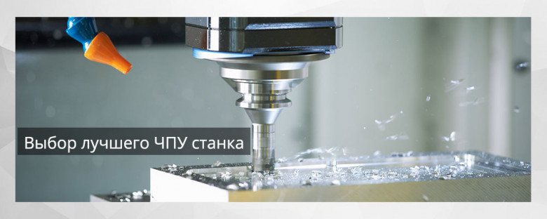
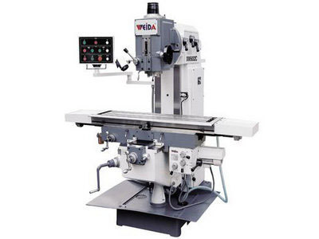
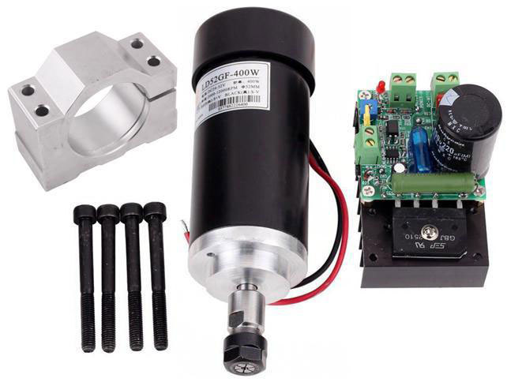

Руководство по выбору ЧПУ-станка
Если вы только открываете бизнес и не имеете опыта в этой области, выбор фрезерного станка ЧПУ может поставить вас в тупик — так велико разнообразие на рынке промышленного инструмента.
Только многолетний опыт и специфические знания позволяют специалистам осуществить выбор станков ЧПУ в соответствии с требованиями предъявляемыми к оборудованию.
По каким же критериям лучше выбрать ЧПУ станок?
Это зависит от того, для чего он будет использоваться. От материалов, профиля работ, необходимой скорости и точности, от требуемого ресурса. Многие значимые характеристики таких станков напрямую зависят от их оснащения — от свойств их комплектующих и расходников, от конструктивных особенностей. Рассмотрим самые основные.
Шпиндель
Шпиндель — одна из главных частей фрезерного станка. Именно от шпинделя зависит то, какие фрезы смогут применяться именно с этим станком, под какими углами их можно будет закрепить и как именно применять. Привод шпинделя обычно вмонтирован — то есть, шпиндель представляет собой мощный компактный электродвигатель с цангой для зажима фрезы.
Область фрезеровки
Это одна их важнейших характеристик станка ЧПУ — размер области фрезеровки определяет то, какого размера изделия сможет обрабатывать станок. Для каждой узкой области применения существуют свои требования по размерам, более универсальные станки имеют регулируемую область фрезеровки, либо заведомо превышающую требования по большинству часто встречающихся кейсов применения.